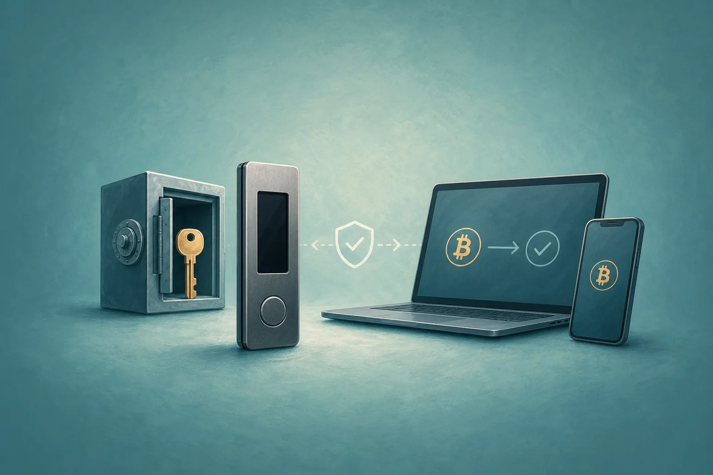

ทำให้ผู้เรียนเข้าใจหน้าที่ของ hardware wallet ก่อนพิจารณาว่าตัวเองจำเป็นไหม
กันไม่ให้ผู้เรียนคิดว่า hardware wallet คือกระเป๋าวิเศษที่แก้ทุกอย่างได้
ถ้าจะสรุปแบบสั้นที่สุด hardware wallet คืออุปกรณ์ที่ช่วยให้ private key ไม่ต้องไปอยู่ในมือถือหรือคอมที่เราใช้งานทั่วไป
เปลี่ยนคำถามจากจำเป็นไหมแบบขาวดำ ไปเป็นเหมาะแค่ไหนกับสถานการณ์ของแต่ละคน
ช่วยผู้เรียนตัดสินใจได้โดยไม่ถูกกดดันเกินจริง
ยิ่งมูลค่ามากขึ้น ยิ่งถือยาวขึ้น และยิ่งอยากพึ่งตัวกลางให้น้อยลง มันก็ยิ่งมีเหตุผลมากขึ้น